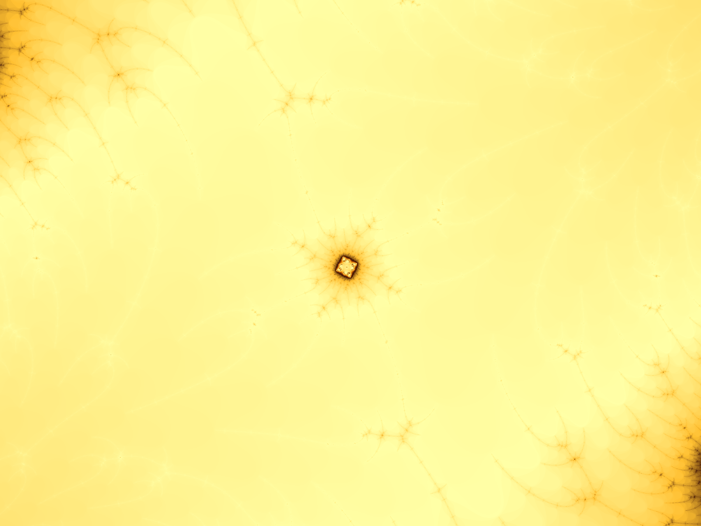

1. First we have π (pi). Pi is an irrational number. An irrational number is a number with infinite decimal places that do not terminate or repeat. So basically it goes on forever without any pattern whatsoever. It's usefulness in Math is that it is the ratio between the cirumference and the diameter of a circle. If you have a mind to keep reading, remember this: Pi is a Transcendental Number.
2. Secondly, we have the statement that "some infinities are bigger than others". This might be a mind-boggling fact but it is true. Let's start out with the number pattern of natural numbers [1,2,3,4…]. This is an infinite set, right? OK, so now remember how I said that Pi is a Transcendental number? Anyways, a transcendental number is: "not a root of an algebraic equation with rational roots." (Wikipedia) So now imagine how many of this infinitely long number are between each natural number. Doesn't it make sense that that number set (which is uncountable) is larger than the Natural Number set?
3. Next are Imaginary Numbers. That term may sound spooky or weird but in reality Imaginary numbers are the Square Roots of negative numbers (√-1 = i or the equation x² + 1 = 0).
4. Next are Mandelbrot Sets. These are very complex fractals. Fractals are shapes that when zoomed in upon, show iterations of themselves forever. To demonstrate, the next few pictures, are Mandelbrot Sets.
